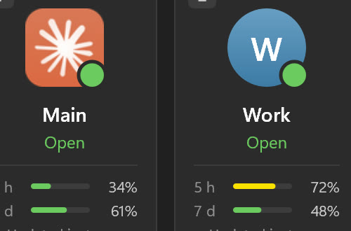
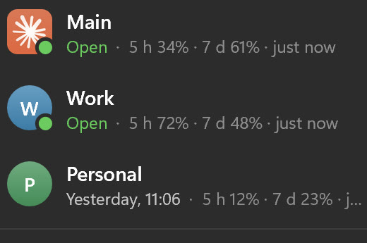
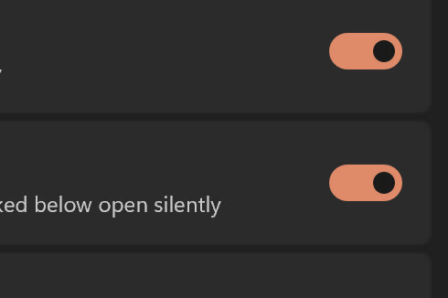
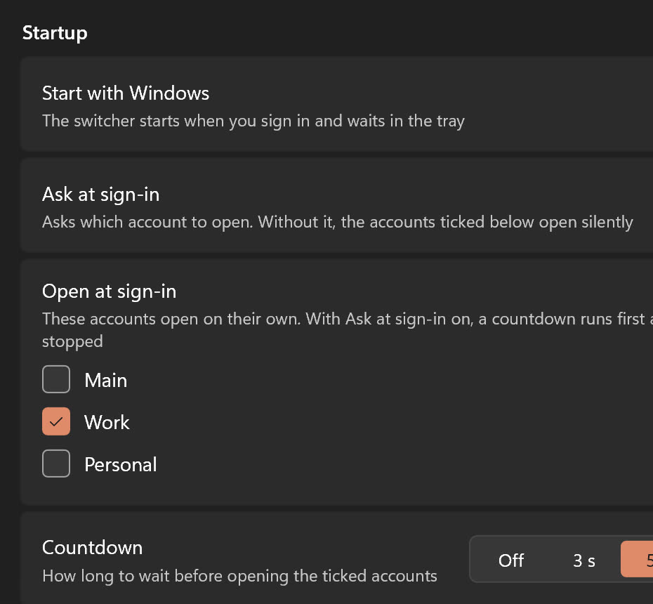

All your Claude
accounts at once
Claude Profile Switcher runs every Claude Desktop account in its own window on Windows. Press Ctrl+Alt+C, pick one, and it opens signed in.
Free and open source. Windows 10 or 11, one 550 KB exe, nothing else to install.
Choose an account
Try it: press 1, 2 or 3, or Ctrl+Alt+C
Claude Desktop holds one sign-in at a time. The switcher gives every account

its own window
and settings
, all open together.
Waits in the tray
Click the tray icon for every account and its usage.
Everything is one key away
Ctrl+Alt+C
Opens the picker from any app.
Ctrl+Alt+1 to 9
Opens that account directly.
Usage on every card
How much of the 5-hour and 7-day limits each account has used.

Starts with Windows
It can ask which account to open, or open your usual ones.
Several at once
Ctrl+click the cards, then open them together.
Green means open
Click it and its window comes forward.
An icon per account
Shortcuts and taskbar buttons carry its badge.
Work opens in 5 s
At Windows sign-in the switcher can open the accounts you tick. A countdown runs first, and any key stops it. Pick a countdown below.
75 ms
From starting it to a visible window. The PowerShell original took about 10 s.
Small and native
16 MB
Memory once it settles, against about 126 MB.
550 KB
One exe in C++ and Direct2D. No .NET, no Electron.
Measured on the same Windows 11 PC with three accounts.
-
Setting it up
First, run the exe and click Add.
-
Then sign in once, in the new Claude window.
-
Now both accounts stay signed in, side by side.
-
Later, Ctrl+Alt+2 opens it from anywhere.
Questions
No. It makes no network requests at all, and it never reads tokens, cookies or passwords. Each account signs in by itself, in its own Claude window.
No. Your main account starts the usual way and keeps auto update and claude:// links. The extra accounts live in their own folders, in %LOCALAPPDATA%\ClaudeProfiles.
Claude Code’s settings, plugins, MCP servers and history live in your user folder, so every account uses the same set. Links and Claude in Chrome go to the main account. Each open account is a full copy of Claude, so plan memory per window.
The exe is not code-signed, so the first run may show “Windows protected your PC”. Click More info, then Run anyway. Every release is built by GitHub Actions from the repository, with SHA-256 checksums next to the files.
Run the new version. Your accounts and settings are kept. Claude itself updates once for every account; windows already open stay on the old version until restarted.
It is a C++ rewrite of Claude Code Desktop Switcher by @PriyanshuGeTRekT, the PowerShell script that worked out the idea. The profile folders are the same, so an existing setup carries straight over.
Two sign‑ins, one PC
Download the exe and run it. It installs itself without admin rights and opens the picker, ready for Add. You need Windows 10 or 11 and Claude Desktop.